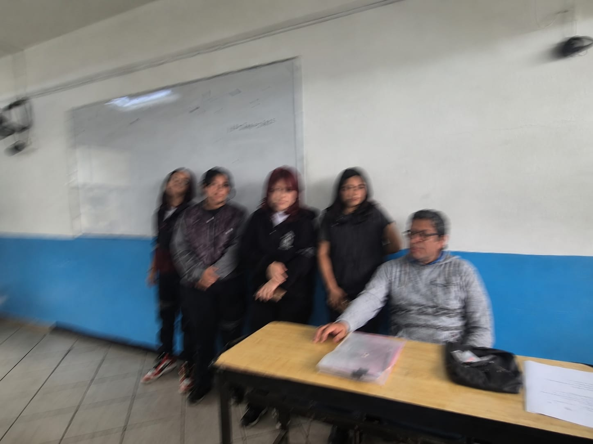

Ignacio Rivera RodriguezEducador de media superiror . 📍 Ciudad de México, México |
|
Zaira Argueta |
Alan De La Cuesta |
Pedro Martinez Candia |
Gracias al Docente Ignacio Rivera Rodriguez que imparte la materia de biologia por recibirnos.En el video se muestra a las alumnas realizando una serie de 10 preguntas al docente brindando su coolaboracion al participar y apoyandonos a responder las preguntas que le teniamos formuladas.
Esto fue realizado en el plantel de la institucion Preparatoria Oficial Numero 115 Emiliano Zapata, con las alumnas del grupo 3-6M con el proposito de que los alumons de esta misma institucion conozcan mejor al docente Enrique.
Las alumnas quienes realizaron este proyecto fueron:

RESPONDIENDO A @Miranda Torrres💬:
Aún recuerdo cuando estaba en la secundaria y la biología al principio era un tema difícil que no lograba comprender del todo. Con el tiempo me comencé a adentrar más en el tema y empezó a despertar mi interés. Descubrí que la biología no solo estudia a los seres vivos, sino también los procesos que hacen posible la vida, desde el funcionamiento de una célula hasta la interacción de organismos completos dentro de un ecosistema.
RESPONDIENDO A @Silva Luna Andi💬
¿Para usted que siente que puede agraceder de la biología?
Podria destacar que gracias a esta disciplina podemos entender mejor quiénes somos, cómo funciona nuestro cuerpo y por qué es importante conservar la biodiversidad del planeta. Por ello, la biología representa para mi, una herramienta fundamental para la formación científica y humana de las nuevas generaciones.
¿Que le motiva a seguir enseñando?
RESPONDIENDO A @Robledo Rojas Stephanie:
Lo que me motiva es saber que cada generación de alumnos representa un nuevo reto y una nueva oportunidad para compartir mi pasión por la biología. Saber que puedo influir positivamente en su formación académica y personal, e incluso inspirar a algunos a seguir una carrera científica, es una de las mayores recompensas de mi profesión. La satisfacción de verlos crecer y alcanzar sus metas es lo que me impulsa a seguir enseñando día con día.¿Siente que la biología debería ser más relevante que otras materias?
RESPONDIENDO A @Mendoza Jacinto Alexia:
No considero que la biología deba ser más relevante que otras materias, ya que cada disciplina aporta conocimientos y habilidades esenciales para la formación integral de los estudiantes. Sin embargo, sí creo que la biología tiene una importancia particular porque nos ayuda a comprender la vida, el funcionamiento de nuestro cuerpo, la salud, el medio ambiente y la relación que tenemos con otros seres vivos.